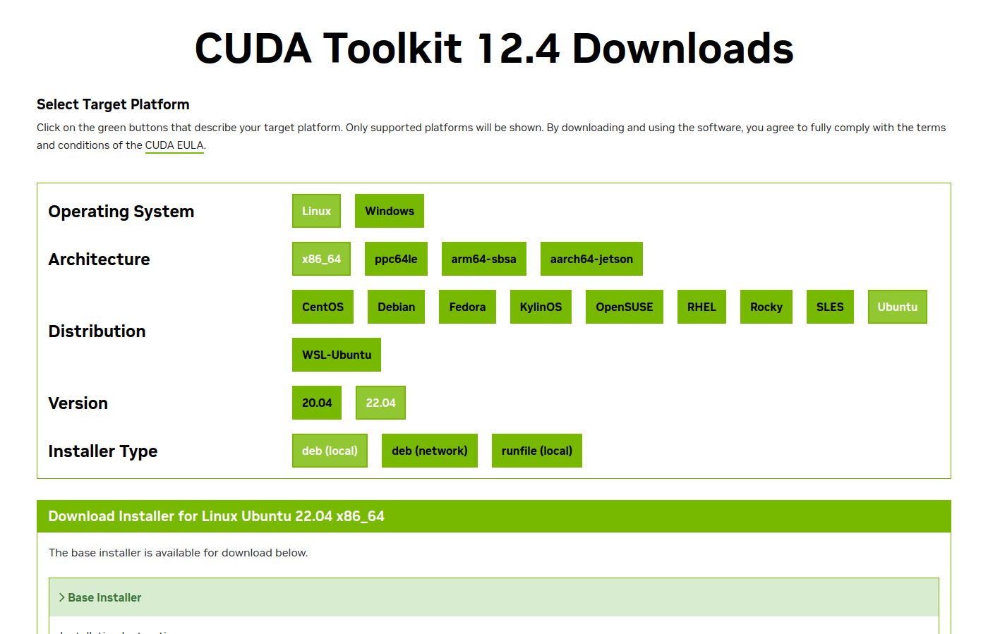

Nvidia DriverやCUDA、cuDNNといったGPUまわりの環境はよく壊れるものです。
このおまけマニュアルでは、壊れた環境を全て削除して再インストールする手順をまとめます。
なお新規に環境を構築する場合は「既存環境の削除」を飛ばして行ってください。
まずは何かと問題の元になる既存環境を削除しましょう。以下のコマンドを端末上で実行します。ここで実行するディレクトリに.debファイルがあるとうまく削除できないので、注意して実行しましょう。
sudo apt purge nvidia* cuda* cudnn* libnvidia* libcuda* libcudnn*
sudo apt autoremove
sudo apt autoclean
sudo apt update
またPyTorchも入れ直すといいかもしれません。なんなら仮想環境ごと作り直してもいいでしょう。仮想環境に入った上で、
python3 -m pip uninstall torch torchaudio torchvision
を実行してPyTorchを削除しましょう。その他Tensorflowやllama-cpp-pythonなどGPUを用いるライブラリを使用している場合は、それらも削除しましょう。
注意
既存環境を削除した後は再起動するようにしましょう。仮想環境上のパッケージなら再起動の必要はないでしょうが、ドライバやcudaの削除後は再起動をおすすめします。また再起動後は画面の色が変になるかもしれませんが、気にせず操作を続けましょう。
それではここから、環境を構築していきます。新規に環境構築する場合はここから読み始めてください。
端末上で
ubuntu-drivers devices
を実行してください。
recommendと書かれたドライバを用いて、
sudo apt install nvidia-driver-xxx
(xxxは任意のバージョン名、パッケージ名は変更になっている可能性あり)としてNVIDIA driverをインストールしましょう。
注意
nvidia-driver-56xにrecommendが表示されている場合は、recommendを無視してnvidia-driver-550をインストールしてください。566などのバージョンでは画面が黒くなって動作しない、といった不具合が発生することがあります。
インストールが終わったら再起動して、端末上で
nvidia-smi
を実行してみましょう。搭載しているGPUの情報が記載されていれば正常に動作しています。
Nvidia Driverがインストールできたら、次はCUDA Toolkitをインストールします。CUDA ToolkitはCUDA Toolkit Archiveからダウンロードすることができます。最新版が欲しい場合はCUDA Toolkitからダウンロードできます。(最新版の方はNvidiaのアカウントが必要になるようです。)
使用したいCUDAのバージョンを選択して、環境を選択してダウンロードします。下図はCUDA Toolkit 12.4をダウンロードしている例です。研究室のPCであればOSはLinux、ArchitectureはX86_64、DistributionはUbuntuを選べばまず間違いないでしょう。

ダウンロードが終わったら、ダウンロードしたディレクトリに移動して、ダウンロードページに記載されている手順に沿ってインストールしましょう。再起動を忘れずにね。
再起動後に、端末上で以下のコマンドを実行してみましょう。
nvcc -V
正常に動作していれば、バージョンが表示されます。
CUDA Toolkitがインストールできたら、最後にcuDNNをインストールしましょう。cuDNNはcuDNN Archiveからダウンロードすることができます。インストールしたCUDA Toolkitのバージョンに合ったcuDNNをダウンロードしましょう。ダウンロードが終わったら、端末上で以下のコマンドを実行しましょう。
sudo dpkg -i {ダウンロードしたファイル}
sudo cp /var/cudnn-local-repo-*/cudnn-local-*-keyring.gpg /usr/share/keyrings/
sudo apt update
sudo apt install libcudnn8
sudo apt install libcudnn8-dev
インストール完了後に再起動したら、環境変数に$CUDA_HOMEを設定することをお勧めします。~/.bashrcや~/.zshrcなどの設定ファイルに、以下の行を追加しましょう。
export CUDA_HOME=/usr/local/cuda
環境変数の設定後、PyTorchなどを入れ直せば終了です。お疲れ様でした。